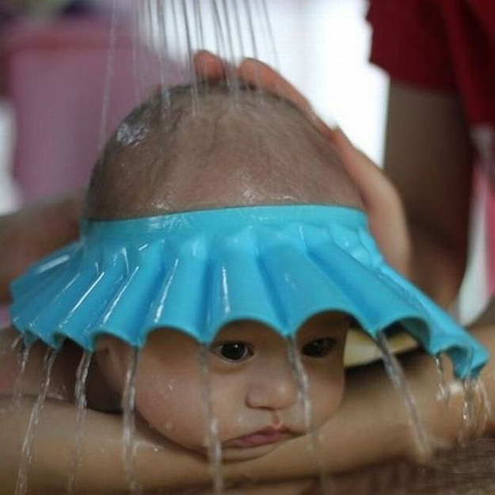
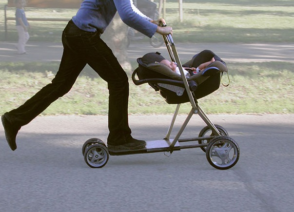
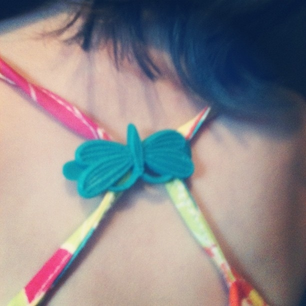
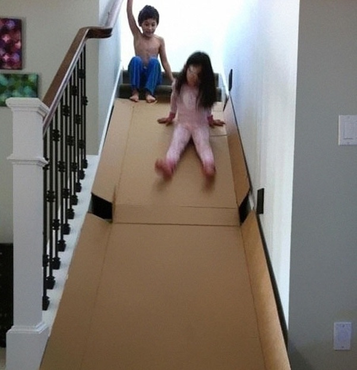
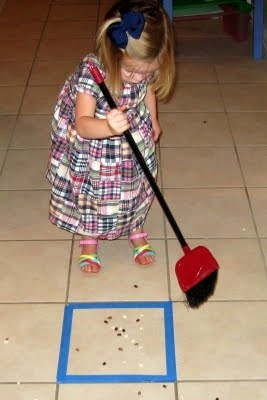
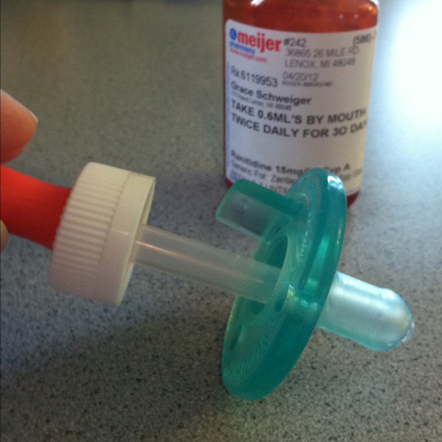

8 Life Hacks For Kids Part 1

Parenting is never an easy job; while you need to take good care of your child to make sure that s/he is happily growing up, you can’t spoil him/her. Are there any parenting hacks that make this easier? Luckily yes, here’re 28 ways to make parenting easier and more fun for both you and your kids
1.This baby shower cap prevents the water from going into the baby’s eyes while bathing
2.Use this baby stroller and scooter hybrid to speed up the ride
3.Use a barrette to fix a loose tank top of a little girl
4.Use a vacuum to tie a daughter’s hair like this
5.Use a cardboard to make a slide over the stairs at home
6.Teach your kids to help cleaning up by playing this game with them
7.Stick a dropper through an already cut pacifier to give medicine to babies
8.Use this baby mop and you can do cleaning and let you kid have fun at the same time